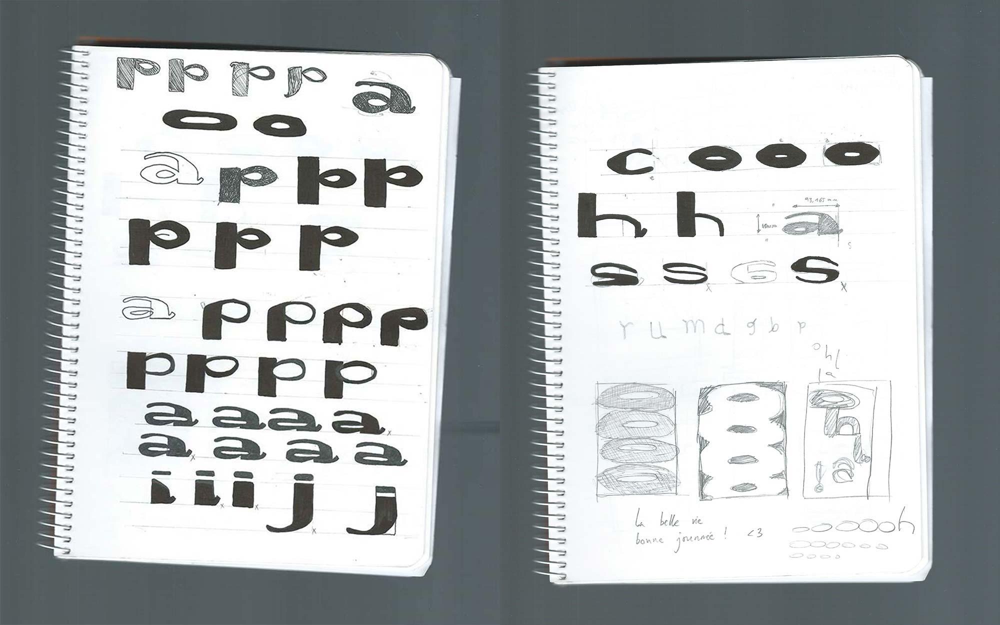
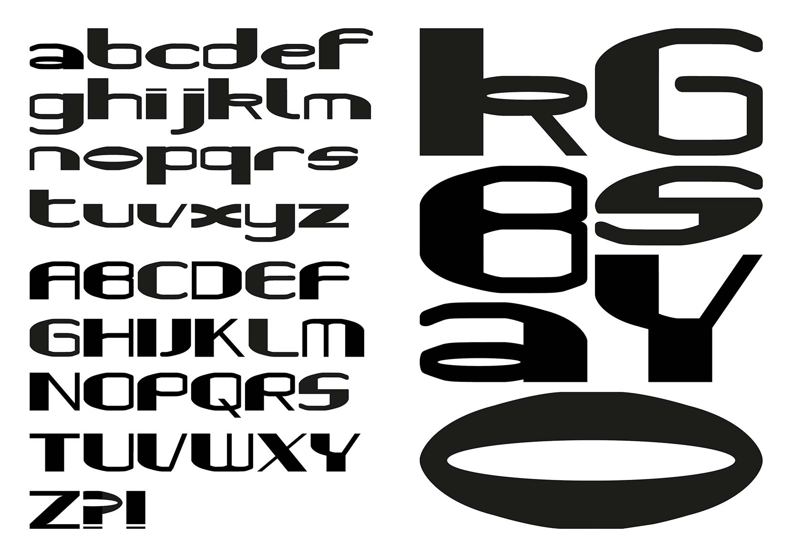
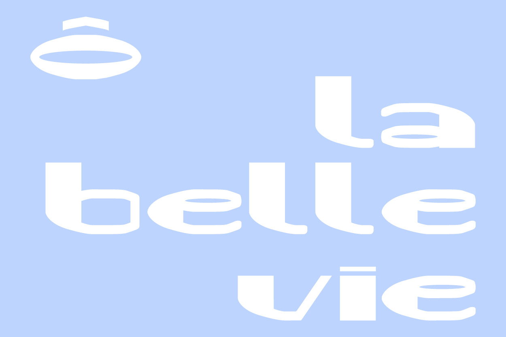
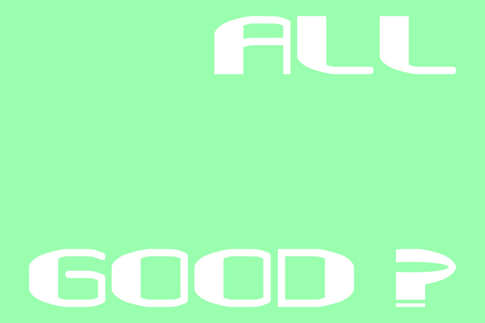
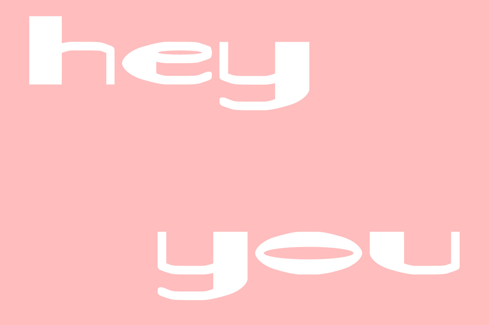
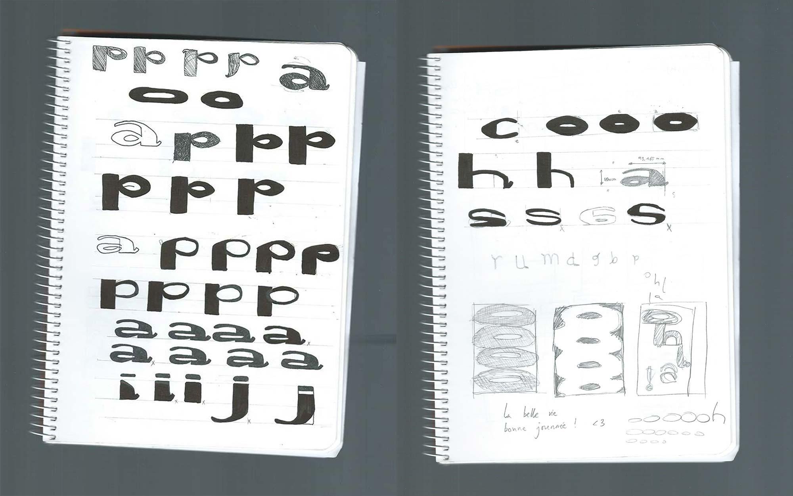
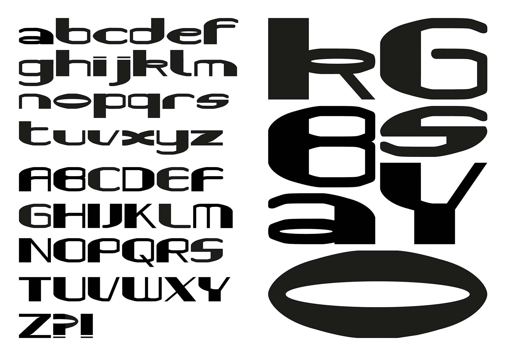
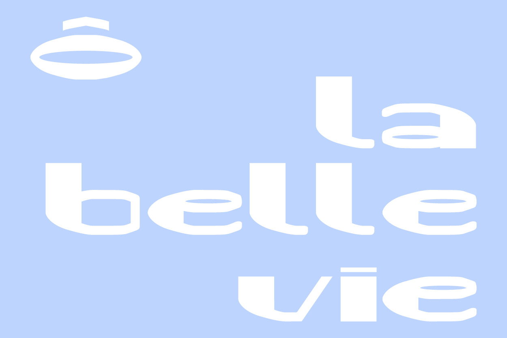
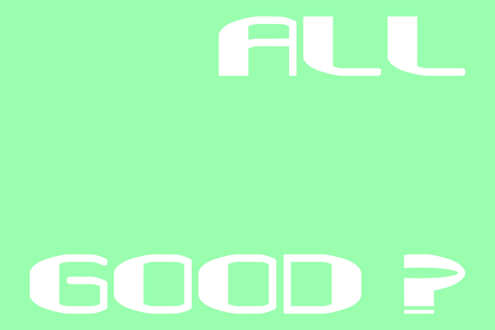
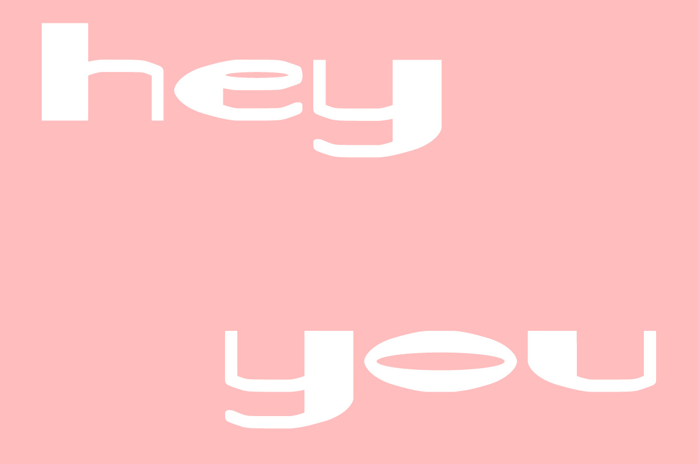

KOUAA FONT
(2021)
création typographiqueexploration
J’ai réalisé une typographie durant mon stage professionnel au sein du studio Los Patos (stage effectué en Espagne durant 10 semaines). La typographie Kouaa s’établit autour de la courbe créée sur la lettre r. Elle est présente sur la majorité des caractères et est la base de création. Cet abécédaire présente des caractères arrondis, avec des contrastes élevés à partir d’un fût d’une forte graisse. La petite hauteur d’x se confronte avec la large chasse et donne à voir une typographie imposante et décalée. Cette typographie est mise à l’épreuve à travers un fanzine imprimé en risographie "Entre ciel et mer" *voir projet suivant*.
 








